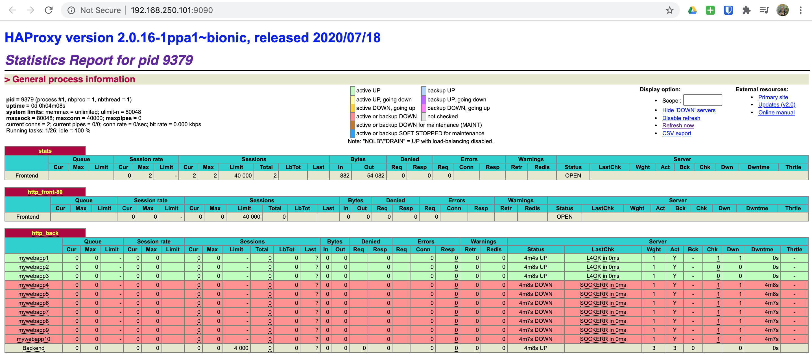
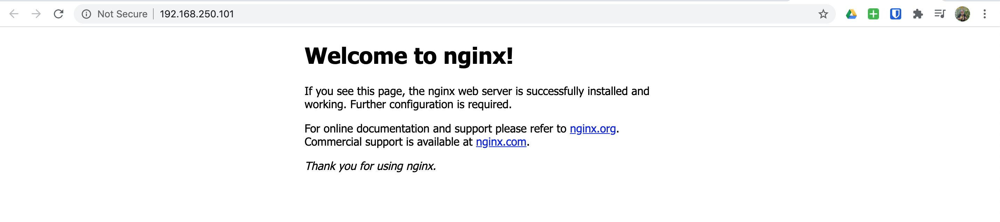

07. Consul - Service Discovery with HAProxy
In this scenario, we will be spinning up the following: a single Consul node, three app servers, and a load balancer.
NOTE: This scenario was borrowed from https://learn.hashicorp.com/consul/integrations/haproxy-consul. However, we've automated the whole process.
Spinning Up
First we need to export our scenario configuration for Vagrant:
export SCENARIO=scenarios/consul_service_discovery_haproxy.yml
Now that we've exported our scenario configuration, we are ready to spin up our environment:
vagrant up
And off we go! You will see a lot going on here as Vagrant and Ansible do their job.
▶ vagrant up
Bringing machine 'consul01' up with 'virtualbox' provider...
Bringing machine 'app01' up with 'virtualbox' provider...
Bringing machine 'app02' up with 'virtualbox' provider...
Bringing machine 'app03' up with 'virtualbox' provider...
Bringing machine 'lb01' up with 'virtualbox' provider...
...
PLAY RECAP *********************************************************************
app01 : ok=51 changed=27 unreachable=0 failed=0 skipped=28 rescued=0 ignored=0
app02 : ok=51 changed=27 unreachable=0 failed=0 skipped=28 rescued=0 ignored=0
app03 : ok=51 changed=27 unreachable=0 failed=0 skipped=28 rescued=0 ignored=0
consul01 : ok=38 changed=19 unreachable=0 failed=0 skipped=22 rescued=0 ignored=0
lb01 : ok=54 changed=30 unreachable=0 failed=0 skipped=10 rescued=0 ignored=0
And once everything completes, we will have a fully functional Consul service discovery with HAProxy.
Nodes
This scenario has the following nodes when completed.
| Node | IP #1 | IP #2 |
|---|---|---|
| consul01 | 192.168.250.11 | |
| app01 | 192.168.250.21 | |
| app02 | 192.168.250.22 | |
| app03 | 192.168.250.23 | |
| lb01 | 192.168.250.101 | 192.168.250.201 |
HAProxy Service Discovery
To get a quick view of the HAProxy admin stats page, head over
here and login with admin:admin.

And as you can see, we have some web servers up, running and fully integrated with Consul using service discovery.
Let's quickly SSH into our HAProxy server and take a look at the Consul and HAProxy configurations.
vagrant ssh lb01
▶ vagrant ssh lb01
Welcome to Ubuntu 18.04.4 LTS (GNU/Linux 4.15.0-76-generic x86_64)
* Documentation: https://help.ubuntu.com
* Management: https://landscape.canonical.com
* Support: https://ubuntu.com/advantage
* "If you've been waiting for the perfect Kubernetes dev solution for
macOS, the wait is over. Learn how to install Microk8s on macOS."
https://www.techrepublic.com/article/how-to-install-microk8s-on-macos/
Last login: Tue Jul 21 20:00:52 2020 from 192.168.250.1
vagrant@lb01:~$
Now that we've logged in, let's change to the /etc/consul.d/client directory.
cd /etc/consul.d/client
Next let's look at the Consul client configuration.
cat config.json
vagrant@lb01:/etc/consul.d/client$ cat config.json
{
"bind_addr": "192.168.250.101",
"client_addr": "0.0.0.0",
"data_dir": "/var/consul/data",
"datacenter": "dc1",
"enable_script_checks": true,
"enable_syslog": true,
"encrypt": "WWw4l0h1LbB4+pC5+VUWiV8kMBNQc+nEwt8OODMx2xg=",
"log_level": "DEBUG",
"node_name": "lb01",
"retry_join": [
"192.168.250.11"
],
"server": false,
"ui": true
}
vagrant@lb01:/etc/consul.d/client$
And as you can see in the above configuration, we are using Consul as a client
rather than a server ("server": false).
Next let's change to the /etc/haproxy directory and look at our HAProxy
configuration.
cd /etc/haproxy
cat haproxy.cfg
vagrant@lb01:/etc/haproxy$ cat haproxy.cfg
#
# Ansible managed
#
global
log /dev/log local0
log /dev/log local1 notice
daemon
chroot /var/lib/haproxy
group haproxy
maxconn 40000
spread-checks 3
stats socket /var/run/haproxy.sock mode 660 level admin
stats timeout 30s
user haproxy
# Default SSL material locations
ca-base /etc/ssl/certs
crt-base /etc/ssl/private
# Default ciphers to use on SSL-enabled listening sockets.
# For more information, see ciphers(1SSL).
ssl-default-bind-ciphers kEECDH+aRSA+AES:kRSA+AES:+AES256:RC4-SHA:!kEDH:!LOW:!EXP:!MD5:!aNULL:!eNULL
ssl-default-bind-options no-sslv3
defaults
log global
maxconn 40000
mode tcp
option dontlognull
option redispatch
option tcp-smart-accept
option tcp-smart-connect
option tcplog
retries 3
timeout client 50000
timeout connect 50000
timeout queue 5000
timeout server 50000
userlist STATSUSERS
group admin users admin
user admin insecure-password admin
frontend stats
acl AuthOkay_ReadOnly http_auth(STATSUSERS)
acl AuthOkay_Admin http_auth_group(STATSUSERS) admin
bind *:9090
mode http
stats enable
stats http-request auth realm stats unless AuthOkay_ReadOnly
stats refresh 10s
stats show-legends
stats uri /
frontend http_front-80
bind 192.168.250.101:80
default_backend http_back
backend http_back
balance roundrobin
server-template mywebapp 10 _web._tcp.service.consul resolvers consul resolve-opts allow-dup-ip resolve-prefer ipv4 check
resolvers consul
nameserver consul 127.0.0.1:8600
accepted_payload_size 8192
hold valid 5s
vagrant@lb01:/etc/haproxy$
Now looking at this configuration, the real magic is happening within the following two blocks:
backend http_back
balance roundrobin
server-template mywebapp 10 _web._tcp.service.consul resolvers consul resolve-opts allow-dup-ip resolve-prefer ipv4 check
The above block is defining the server-template which is used to perform the
service discovery within our Consul cluster. The template is telling HAProxy
to discover the web services that are registered in Consul using the consul
resolver as defined below. To do the DNS discovery for us and return the results
back to HAProxy.
resolvers consul
nameserver consul 127.0.0.1:8600
accepted_payload_size 8192
hold valid 5s
App Servers
We have also spun up three app servers with our stack. These servers will over time provide us many different services in which we will use for learning. But for now, the following list is what they provide:
- NGINX: HTTP
NOTE: SSH to any one of
app[01-03].
These servers are also running the Consul client which is configured as below:
vagrant ssh app01
cd /etc/consul.d/client
cat config.json
vagrant@app01:/etc/consul.d/client$ cat config.json
{
"bind_addr": "192.168.250.31",
"client_addr": "0.0.0.0",
"data_dir": "/var/consul/data",
"datacenter": "dc1",
"enable_script_checks": true,
"enable_syslog": true,
"encrypt": "WWw4l0h1LbB4+pC5+VUWiV8kMBNQc+nEwt8OODMx2xg=",
"log_level": "DEBUG",
"node_name": "app01",
"retry_join": [
"192.168.250.11"
],
"server": false,
"ui": true
}
vagrant@app01:/etc/consul.d/client$
And once again, we SHOULD notice that our Consul client configuration is identical to our HAProxy server.
Our Consul services that we are registering, are being done using Ansible. The following shows how that is accomplished for us. We could also do this creating Consul client configurations on our app servers, but we've chosen to use Ansible.
group_vars/app_servers/consul.yml
---
# Define Consul services for app servers
consul_services:
- name: grafana
port: 3000
script: curl --silent http://localhost:3000/api/health
interval: 3s
state: present
- name: web
port: 80
script: curl --silent http://localhost
interval: 3s
state: present
playbooks/app_servers.yml
- hosts: app_servers
tasks:
- name: Manage Consul Services
consul:
service_name: "{{ item.name }}"
service_port: "{{ item.port }}"
script: "{{ item.script|default(omit) }}"
interval: "{{ item.interval|default(omit) }}"
state: "{{ item.state|default(omit) }}"
become: true
loop: "{{ consul_services }}"
And to prove that they are working correctly through our HAProxy load balancer, simply browse to http://192.168.250.101.
